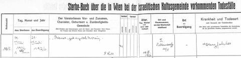
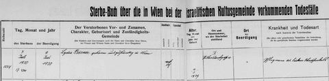

Ernst Prisner
1902–1944
Life events
| Born | 10 Aug 1902 · Vienna, Austria Map |
|---|---|
| Married | 1925 · Edith Weiss · Pazmanitentempel, 1020 Pazmanitengasse 6, Vienna, Austria Map |
| Divorced | 13 Jun 1939 · Edith Weiss · Vienna, Austria Map |
| Died | 1944 · Auschwitz Death Camp, Oswiecim, Malopolskie, Poland Map · Murdered by Nazis in the Holocaust |
| Deportation | 27 Mar 1944 · Auschwitz Death Camp, Oswiecim, Malopolskie, Poland Map |
| Deportation | 25 Feb 1945 · Flossenbürg concentration camp, Flossenbürg, Neustadt an der Waldnaab, Bavaria, Germany Map |
Family
Ernst Prisner1902–1944

Edith Weiss1905–1986
Children

stillborn girl Prisner1926–1926
Lydia Prisner1929–1930
Photos

Ernestine Blau
Ernst Prisner
Ernst Prisner